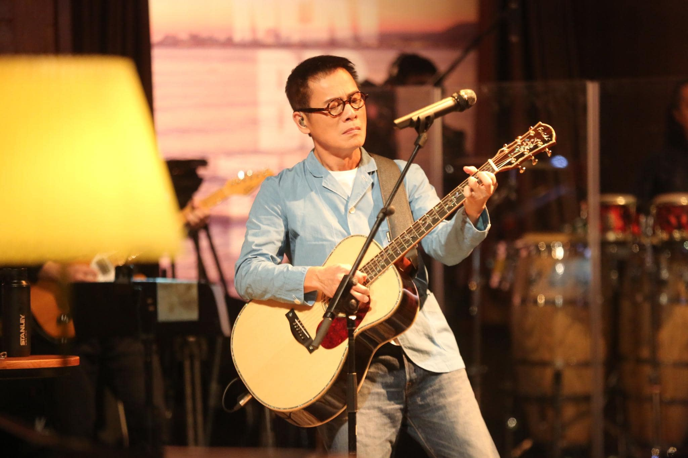

罗大佑
罗大佑（Tayu Lo），1954年7月20日出生于台湾省台北市，台湾省苗栗县客家人，祖籍广东省梅州市梅县区，中国台湾男歌手、词曲创作人、音乐人、作家，有“台湾流行音乐教父”之称。 [1-2]
重要事件
- 1974年创作了第一首歌曲《歌》
- 1981年首度担任唱片制作人，制作歌曲《童年》。
- 1982年发行个人第一张专辑《之乎者也》，打破当时流行的民歌曲风 ，带领台湾流行音乐走向毫无前例的批判与省思风潮。
- 1985年创作《明天会更好》后离台赴港发展。
- 1987年于纽约获颁“亚洲最杰出艺人奖”。
- 1988年出版第一部文学作品《昨日遗书》。
- 1990年创设“音乐工厂”，陆续发表《东方之珠》《似是故人来》等歌曲 ，并为多部电影配乐。
- 1991年《皇后大道东》在香港发行，囊括香港三大排行榜冠军，四首歌曲进榜 。
- 2000年首次前往中国内地举行个人演唱会 。
- 2009年与李宗盛、周华健等人组成纵贯线，并展开一年世界巡回 。
- 2013年担任《中国最强音》导师。
- 2017年发行《家III》，举办“当年离家的年轻人”巡回演唱会。
主要成就
- 2017 最爱金曲奖“金曲至尊创作人”大奖 （获奖）
- 2016 华语金曲奖2016华语音乐至尊贡献奖 （获奖）
- 2016 第20届 全球华语榜中榜“年度最佳电影音乐创作人” （获奖）
- 2016 第20届 全球华语榜中榜“华语乐坛至尊音乐人” （获奖）
- 2011 华娱卫视亚洲十大红人盛典2011亚洲年度贡献奖 （获奖）
- 2010 第34届 香港国际电影节最佳原创音乐奖 《复仇》 （获奖）
- 2010 亚洲电影大奖最佳原创音乐 《复仇》 （获奖）
- 2009 年度一听音乐榜特别推荐现场艺人 （获奖）
- 2009 流行音乐界评选新百大专辑-再获第一 《之乎者也》 （获奖）
- 2009 金榕树音乐大奖最佳现场 （获奖）
- 2009 东南劲爆音乐榜华语乐坛杰出贡献奖(终身成就奖) （获奖）
- 2007 华语音乐传媒盛典风尚音乐贡献奖 （获奖）
- 2005 华语音乐传媒盛典最佳国语专辑 《美丽岛》 （获奖）
- 2003 第4届 中国金唱片(CGRA)艺术成就奖 （获奖）
- 2001 第1届 音乐风云榜终身成就奖 （获奖）
- 1994 1975年——1993年流行音乐百张最佳专辑-第一 《之乎者也》 （获奖）
- 1993 第3届 中时晚报唱片评鉴大奖最佳制作人奖 （获奖）
- 1993 第3届 中时晚报唱片评鉴大奖最佳专辑 （获奖）
- 1993 新加坡第一届醉心金曲奖十年风云人物荣誉大奖 （获奖）
- 1993 金鼎奖最佳作词奖 《大地的孩子》 （获奖）
- 1992 MTV音乐录影带大奖亚洲最佳录影带奖 《火车》 （获奖）
- 1992 金曲奖最佳单曲歌唱录影带影片奖 《火车》 （获奖）
- 1987 金嗓奖最佳作曲奖 《意乱情迷》 （获奖）
- 1987 亚洲最杰出艺人奖 （获奖）
主要作品
| 年份 |
专辑名称 |
| 1982 |
之乎者也 |
| 1984 |
家 |
| 1985 |
青春舞曲 |
| 1986 |
未来的主人翁 |
| 1988 |
爱人同志 |
| 1989 |
衣锦还乡 |
| 1989 |
闪亮的日子 |
| 1989 |
告别的年代 |
| 1991 |
皇后大道东 |
| 1991 |
原乡 |
| 1992 |
首都 |
| 1993 |
情歌纪念日 |
| 1994 |
恋曲2000 |
| 1995 |
再会吧!素兰 |
| 2002 |
昨日至今 |
| 2004 |
追梦 |
| 2004 |
美丽岛 |
| 2014 |
只得一生 |
| 2015 |
穿越漩涡 |
| 2017 |
家(III) |
| 2018 |
夜是秋月明 |
生活照

生平
1972年参加学生乐队担任键盘手。1974年创作了第一首歌曲《歌》，1976年正式投入商业音乐创作。
1981年首度担任唱片制作人，制作歌曲《童年》。1982年发行个人第一张专辑《之乎者也》，打破当时流行的民歌曲风，带领台湾流行音乐走向毫无前例的批判与省思风潮。
随后推出《未来的主人翁》专辑，针对民族、时局、传统、社会，进行前所未有的批判。1985年创作《明天会更好》后离台赴港发展。
1987年于纽约获颁“亚洲最杰出艺人奖”。
1988年出版第一部文学作品《昨日遗书》。1990年创设“音乐工厂”，陆续发表《东方之珠》《似是故人来》等歌曲
，并为多部电影配乐。1991年《皇后大道东》在香港发行，囊括香港三大排行榜冠军，四首歌曲进榜。1990年代初期，大陆歌迷对罗大佑的喜爱到达高点。
2000年首次前往中国内地举行个人演唱会。
2009年与李宗盛、周华健等人组成纵贯线，并展开一年世界巡回。2013年担任《中国最强音》导师。
2017年发行《家III》，举办“当年离家的年轻人”巡回演唱会。